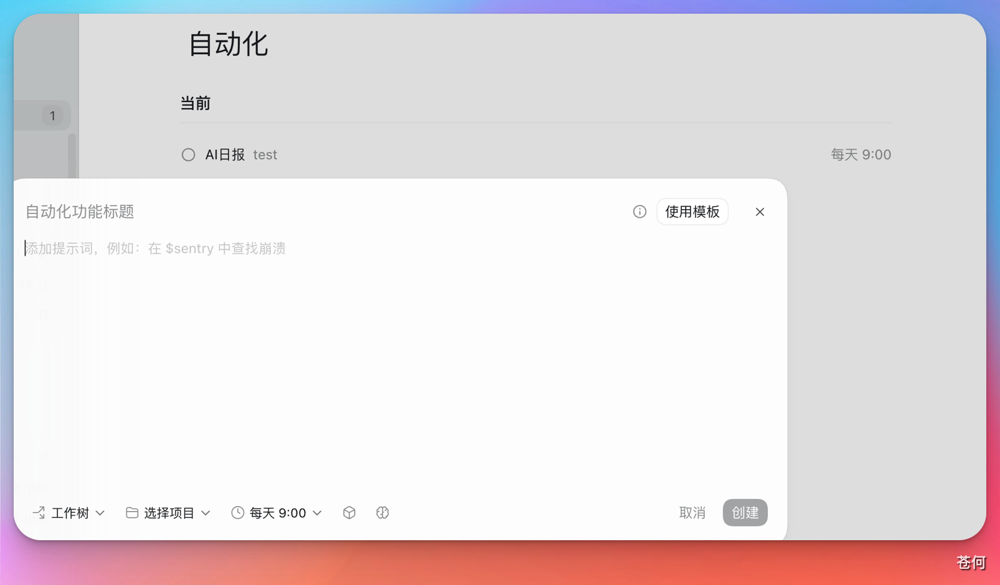

10 日常工作流
自动化
这一节介绍 Codex 中的 Automation。如果说 Skill 更关注“怎么做”，那么 Automation 更关注“什么时候自动去做”。
本站同步：本节已同步为站内教程，可直接阅读；账号、套餐、权限和界面以实际显示为准。
来源：CodexGuide 原文。原页面标注 MIT Licensed；原图与说明按页面内容保留。
自动化
这一节介绍 Codex 中的 Automation。如果说 Skill 更关注“怎么做”，那么 Automation 更关注“什么时候自动去做”。
💡 最后核对 官方资料最后核对日期：2026-05-27。本文参考 Using Codex with your ChatGPT plan 与 Codex use cases。不同客户端、工作区套餐和权限设置下，自动化入口和可选项可能会有所不同。
当一个工作流已经足够稳定、而且会重复发生时，就可以考虑把它交给 Automation，在后台按计划触发，而不是每次都手动发起。
适合自动化的任务包括：
- 定期检查文档死链
- 每周整理一次 issue 或 PR 摘要
- 每天汇总 failing CI
- 在固定时间提醒补复盘或更新文档
可以怎么理解自动化
一个自动化任务通常至少会包含三部分：
- 目标对象
它对应哪个项目、仓库或线程。 - 触发时机
比如固定时间、固定间隔，或者稍后回到当前任务继续跟进。 - 执行内容
也就是让 Codex 到时具体去完成什么。
常见使用流程
在支持 Automations 的界面里，你通常会经历类似下面的流程：
- 选择对应的项目、仓库或当前线程。
- 设定执行时间或执行周期。
- 写清楚自动化任务本身的目标、输出格式和边界。
- 保存后观察第一次运行结果，再决定是否长期保留。
这里最容易被忽略的一点是：自动化 prompt 要尽量写成”自包含”的任务说明。不要默认它会记得你之前说过什么，最好把检查范围、输出格式和验证要求写完整。
❌ 不够自包含的写法：
请检查一下文档里的链接有没有问题。
✅ 推荐的写法：
请检查 docs/ 目录下所有 .md 文件中的外部链接是否有效。
检查范围：仅检查以 http:// 或 https:// 开头的链接，忽略锚点和相对路径。
输出格式：按”文件路径 | 行号 | 链接 | 状态”列出失效链接；全部正常时输出”全部链接正常”。
验证方式：对每个链接发起 HEAD 请求，超时 5 秒视为失效。
限制：不修改任何文件，不创建新文件。
两者的区别在于：第一种每次触发时 Codex 都要靠猜测来填补缺失的细节，结果容易不稳定；第二种把边界、格式、验证方式都写明白了，无论在哪次执行、哪个上下文里，行为都是一致可预期的。
使用时的提醒
- 不同工作区里的自动化能力可能并不完全一样，有些支持项目级任务，有些更偏向提醒和跟进。
- 第一次配置时，建议先从低风险、只读型任务开始。
- 如果自动化会写文件、访问外部系统或触发通知，最好先确认权限边界和人工复核方式。
